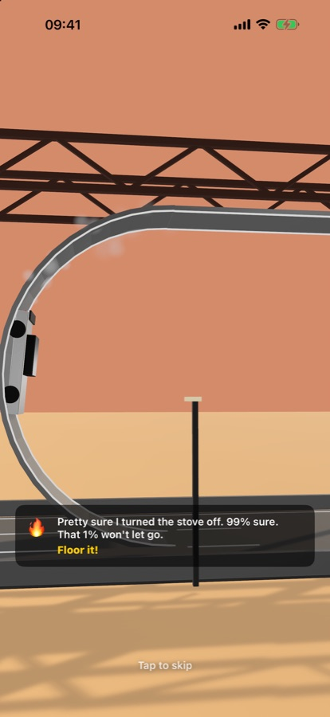
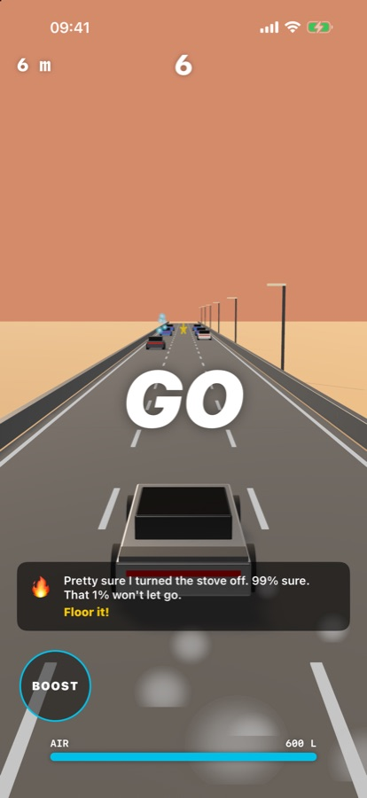
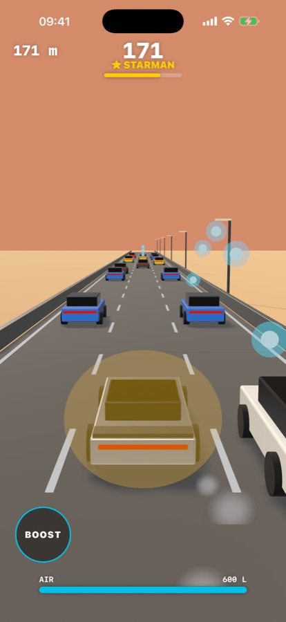
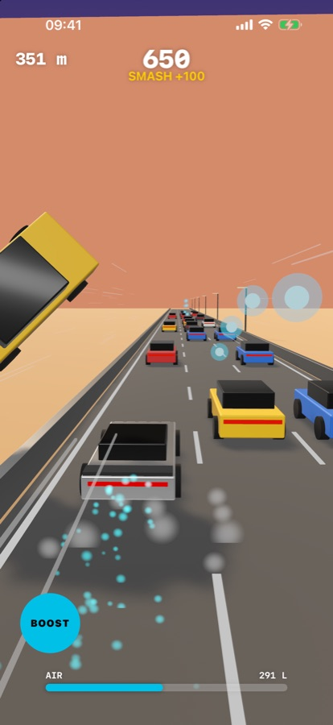

Roadastar is a one-thumb arcade highway runner. Swipe between lanes, jump and fly over cars, chain flips and barrel rolls into a combo, and grab the golden star to send traffic flying. It runs entirely on your iPhone — no account, no server, nothing sent anywhere.




Need help?
Email selahattincincin@gmail.com — you'll get a personal reply, usually within a couple of days.
Please include your iPhone model, your iOS version, and what you were doing when it happened.
How to play
- ⇆Swipe left / rightChange lane
- ●TapJump
- ↻Tap again mid-airFront flip
- ↺Swipe sideways mid-airBarrel roll
- ▲HoldFly (uses AIR)
- ▼Swipe downSlam back to the road
- ⚡Hold BOOSTSpeed up (uses AIR)
- ★Golden star8 seconds of STARMAN
Common questions
How do I see the tutorial again?
Tap How to play? in the main menu, or open your profile and choose Replay tutorial. Tap the screen during the opening ramp to skip straight to the road.
How do I change the language, sound or vibration?
Tap the profile button at the top left of the main menu. Switch between System, Türkçe and English, turn sound on or off, set engine and effects volume separately, or turn vibration off. The speaker button at the top right mutes everything in one tap.
I can't hear anything
Check that Sound on is enabled in your profile and both volume sliders are above zero. Roadastar follows your iPhone's silent switch — turn silent mode off and raise the volume.
Can I change my pilot name?
Yes. Open your profile, edit the name and tap Save. Letters, digits and underscores, 3 to 14 characters. The number after your name stays the same.
Where is my best score kept?
Only on your iPhone. There is no account, so scores don't move to another device, and deleting the app deletes them. See the privacy policy.
Does it need an internet connection?
No. The whole game runs on the device and works in airplane mode.
Are there ads or in-app purchases?
No ads, no in-app purchases, no subscriptions.
Which iPhones does it work on?
Any iPhone with iOS 18 or later. The game is designed for portrait.
Report a problem
Crash, stutter or something that looks wrong? Email what happened and what you expected. Roadastar has no analytics and sends no crash reports — your message is the only way a bug gets found.